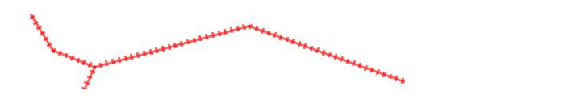

|
|||||||||||
| PREV CLASS NEXT CLASS | FRAMES NO FRAMES | ||||||||||
| SUMMARY: NESTED | FIELD | CONSTR | METHOD | DETAIL: FIELD | CONSTR | METHOD | ||||||||||
java.lang.Object
|
+--com.esri.mo2.map.draw.BaseSymbol
|
+--com.esri.mo2.map.draw.HashLineSymbol
HashlineSymbol alows to draw the railroad.
The symbol supports next attrites:
Antialiasing can be true or false, default is false.
Transparency is transparency from 0.0 to 1.0, default is 1.0
Type is symbol type. The "background" type means the simple line.
The "foreground" type means the railroad, default is "foreground".
SymbolColor is a color of railroad, default is black.
Width is a line width, default is 6.
LineThickness is a thickness of the line, default is 1 pixel.
TickThickness is a thickness of the sleepers, default is 1 pixel.
Interval is the interval between the sleepers, default is 8 pixels.
The result of the next example is shown on the picture.
HashLineSymbol hlSymbol = new HashLineSymbol();

hlSymbol.setAntialiasing(true);
hlSymbol.setTransparency(0.6);
hlSymbol.setSymbolColor( new Color(255,0,0) );
hlSymbol.setType( HashLineSymbol.HASHLINE_TYPE_FOREGROUND );
hlSymbol.setWidth( 4 );
hlSymbol.setLineThickness( 3 );
hlSymbol.setTickThickness( 2 );
| Field Summary | |
static int |
DEFAULT_INTERVAL
This constant defines the default interval between the sleepers. |
static int |
DEFAULT_LINETHICKNESS
This constant defines the default central line thickness. |
static boolean |
DEFAULT_OVERLAP
This constant defines the default value of overlap. |
static Color |
DEFAULT_SYMBOLCOLOR
This constant defines the default color for symbol. |
static int |
DEFAULT_TICKTHICKNESS
This constant defines the default thickness of sleepers. |
static int |
DEFAULT_TYPE
This constant defines the default symbol type. |
static int |
DEFAULT_WIDTH
This constant defines the default value for width of the symbol. |
static int |
HASHLINE_TYPE_BACKGROUND
This constant defines the hasline type for background. |
static int |
HASHLINE_TYPE_FOREGROUND
This constant defines the hasline type for foreground. |
| Fields inherited from class com.esri.mo2.map.draw.BaseSymbol |
DEFAULT_ANTIALIASING, DEFAULT_TRANSPARENCY |
| Constructor Summary | |
HashLineSymbol()
|
|
| Method Summary | |
void |
draw(FeatureGeometry g,
Graphics2D g2,
Object values)
This method draws the symbol in graphics context. |
double |
getInterval()
Obtains the symbol interval. |
int |
getLineThickness()
Obtrains the symbol linethickness. |
Dimension |
getMaximumSymbolSize()
It returns a Dimension of the symbol |
boolean |
getOverlap()
Obtains the value of overlap. |
Color |
getSymbolColor()
Obtains the symbol color. |
int |
getTickThickness()
Obtains the symbol tickthickness. |
int |
getType()
Obtains the symbol type. |
double |
getWidth()
Obtains symbol width. |
void |
setInterval(double interval)
Sets symbol interval. |
void |
setLineThickness(int linethickness)
Sets the symbol linethickness. |
void |
setOverlap(boolean overlap)
Sets the value of overlap. |
void |
setSymbolColor(Color symbolcolor)
Sets symbol color. |
void |
setTickThickness(int tickthickness)
Sets the symbol tickthickness. |
void |
setType(int type)
Sets symbol type. |
void |
setWidth(double width)
Sets the symbol sidth. |
| Methods inherited from class com.esri.mo2.map.draw.BaseSymbol |
CalcCentroid, clone, filterShadowImage, filterTransparentImage, getAntialiasing, getFieldCount, getFieldName, getRenderer, getTransparency, hasTransparency, setAntialiasing, setRenderer, setTransparency, switchTransform |
| Methods inherited from class java.lang.Object |
equals, finalize, getClass, hashCode, notify, notifyAll, toString, wait, wait, wait |
| Field Detail |
public static final int HASHLINE_TYPE_FOREGROUND
public static final int HASHLINE_TYPE_BACKGROUND
public static final Color DEFAULT_SYMBOLCOLOR
public static final int DEFAULT_TYPE
HASHLINE_TYPE_FOREGROUND,
Constant Field Valuespublic static final int DEFAULT_WIDTH
public static final int DEFAULT_INTERVAL
public static final int DEFAULT_LINETHICKNESS
public static final int DEFAULT_TICKTHICKNESS
public static final boolean DEFAULT_OVERLAP
| Constructor Detail |
public HashLineSymbol()
| Method Detail |
public void draw(FeatureGeometry g,
Graphics2D g2,
Object values)
g - the Geometryg2 - the graphics context for renderingvalues - the values of attribute fields, null == is ok and means no field valuesSymbol.draw(com.esri.mo2.cs.geom.FeatureGeometry, java.awt.Graphics2D, java.lang.Object)public void setSymbolColor(Color symbolcolor)
symbolcolor - is a symbol colorpublic Color getSymbolColor()
public void setType(int type)
type - is a symbol typeHASHLINE_TYPE_FOREGROUND,
HASHLINE_TYPE_BACKGROUNDpublic int getType()
setType(int)public void setWidth(double width)
width - is a symbol widthpublic double getWidth()
public void setInterval(double interval)
interval - is the symbol intervalpublic double getInterval()
public void setLineThickness(int linethickness)
linethickness - is a thickness of central line.public int getLineThickness()
public void setTickThickness(int tickthickness)
tickthickness - is a thickness of slepper.public int getTickThickness()
public void setOverlap(boolean overlap)
overlap - is a value of overlappublic boolean getOverlap()
public Dimension getMaximumSymbolSize()
getMaximumSymbolSize in class BaseSymbolRenderer.getMaximumSymbolSize()
|
|||||||||||
| PREV CLASS NEXT CLASS | FRAMES NO FRAMES | ||||||||||
| SUMMARY: NESTED | FIELD | CONSTR | METHOD | DETAIL: FIELD | CONSTR | METHOD | ||||||||||